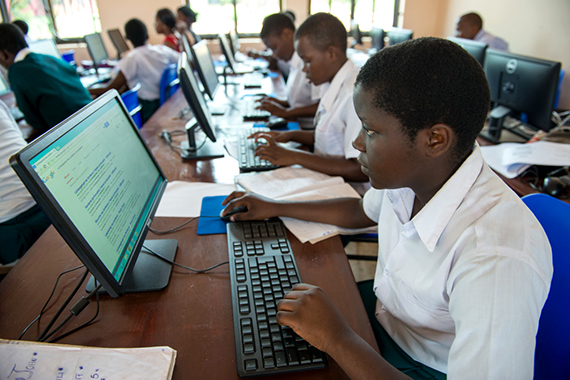

Table, images and Media
| s/n |
name |
Gender |
| 1 |
Stephen |
Male |
| 2 |
Roland |
Male |
| 3 |
Ayo |
Male |
| 4 |
Shade |
Female |
| 5 |
Victor |
Male |
| 6 |
Bright |
Male |
| 7 |
Emmanuel |
Male |
| 8 |
Idris |
Males |

Nigeria
South East
- Anambra.
- Ebonyi
- Imo
- Enugu
- Abia
- Peter Obi
- A former Presidential aspirant
- Chalse Soludo
- A former CBN Governor
North Central
- Benue
- Kogi
- Jos
- Kwara
- Nasarawa
- Kebbi
- Yakubu Gowon
- A fomer militry dictator
- Dr. Olusola Saraki
- A former Govornor of Kwara state
South West
- Lagos
- Ogun
- Osun
- Oyo
- Ekiti
- Ondo
- Olusegun Obasanjo
- A former President of Nigeria
- Obafemi Awolowo
- A former Premier of the western region
South South
- Delta
- Edo
- Bayelsa
- Cross river
- Akwa Ibom
- Rivers
- Nyesom Wike
- A current minister of the Fedral Republic of Nigeria
- Donald Duke
- A former Governor of Cross River state
North West
- Kaduna
- Kano
- Jigawa
- Kebbi
- Nigeria
- Sokoto
- Mohamadu Buahri
- A former president of Nigeria
- Nassir El-rufai
- A former Governor of Kaduna state
North East
- Borno
- Taraba
- Adamawa
- Bauchi
- Gombe
- Yobe
- Kasim Setima
- The vice president of the fedral republic of Nigeria
- Atiku Abubakar
- a former vice presidents